全てにおいてスケールの大きな北海道。
そんな札幌は真駒内にある滝野霊園はギガトン級のスケールで来園者の度肝を抜きまくりなのだ。
訪問前に地図で見ると広い広い。
どのくらい広いかというと約950000平米。ＴＤＬやＵＳＪよりも大きい。
東京ドーム20個分（何故かパンフには「36個分」とあった）、皇居や愛知万博会場よりチョイ小さい位と思っていただければ判りやすいかと思う。
大型テーマパークを凌駕する常軌を逸したスケールの霊園なのだ。
きっと冬季は雪山登山の重装備でもしていかなければ遭難するかもしれない（ウソです）。
故人の命日が冬季の方は要注意の霊園だ（嘘、嘘）。
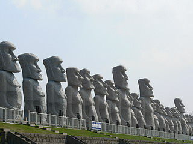 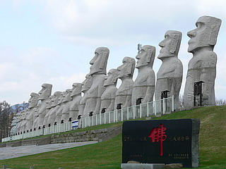
入口から一歩入れば左右には巨大なモアイ像の大行列。
石碑を見ると三十三モアイ地蔵とある。え、モアイが改宗してお地蔵さんに？
東京にあったら速攻地上げされそうな広い芝生。
千葉にあったら速攻ゼロヨン族に占拠されそうな直線道路。
見れば犬の散歩やジョギング、カップルのデートコースなんかにもなっている。霊園でデート…ま、いいですけど。
そんな中にずらりと並ぶ巨大なモアイ像。
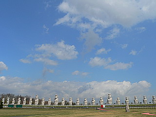
なんでイースター島と縁もゆかりもない北海道にモアイが？しかも地蔵扱い。
などという愚問はこの広大なスケールの前には全く意味を成さないのであ〜る。
何でもお盆にはご先祖さまの精霊がこのモアイ像をめがけてやってくるとか。
つまりお盆の高灯籠みたいなもんですか。
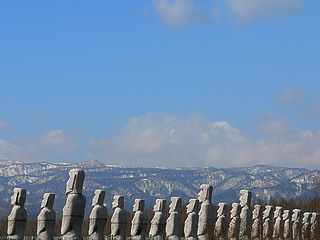 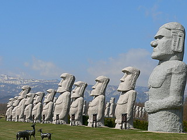
霊園にモアイ像。
どう考えてもバカバカしい状況だが、あまりにもスケールが大きすぎて可笑しいんだか何なんだか良く判らなくなってくる。
一瞬、コレはコレでアリなのか？と不覚にも思ったりしちゃったが、モアイベンチを見て我に返る。
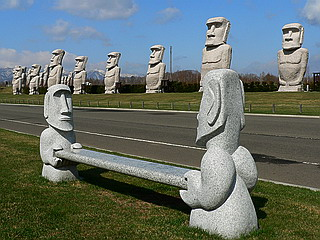
…やっぱ変だ。
モアイ地蔵は以下の要素で構成されている。
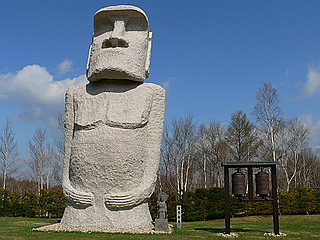
| モアイの石像（10メートル前後） | 1体 |
| 小さい観音像 | 1体 |
| マニ車 | 2個1組 |
以上である。
マニ車は勿論回転可。北の大地でもグルングルン回しておきました。
しかし…
3つ4つ回したところで「コレを全部回していたら俺の一日は終わってしまう」と気付いたので、以下同文という事でモアイ地蔵さん達には勘弁してもらった。
…早急に気付いて良かったよ…
三十三モアイ地蔵の奥には鋳造製の仏像がおわす。
大きさ的には立派な大仏サイズだろうが、眼前に展開するモアイと広大な芝生と白樺の林の中にあってはあまりにも小さすぎる仏像であった。
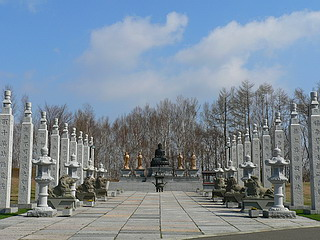 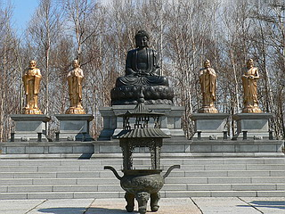
で、お次に現れるのが当霊園のシンデレラ城であるストーンヘンジ。
…石だったら何でもええじゃろ！の太陽公園みたいになってきたぞ…
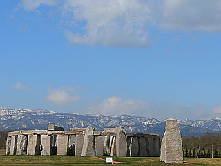
本家とは縁もゆかりもない遺跡。
それこそが遺跡のみならず歴史や思想、宗教さえをも大量にコピーし、消費し続ける現代社会の映し鏡のように思えてならない。
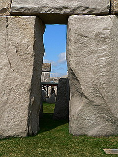 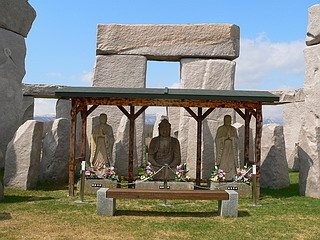
ストーンヘンジの中央には釈迦三尊像。
このへんのアンバランス具合に痺れまくり。
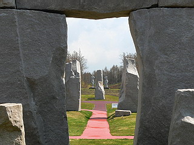
ホンモノのストーンヘンジ同様、夏至になると正面から太陽が昇るのだそうだが、その正面の延長線上にはこんなお方が。
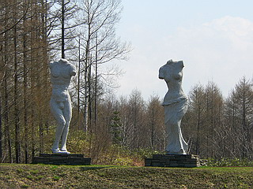
真正面の延長上には男女の石像が。何でやねん。
そして石の合間から見えるのはモアイ像。このとりとめのない何でもアリ感がこの霊園の最大の特徴である。
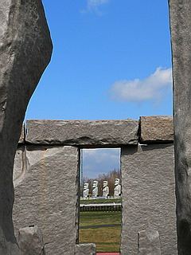
ストーンヘンジのお隣には大仏さんがおわす。
石で出来た鎌倉大仏のそっくりさん。御霊供養大仏。
高さ13.5メートル、重さは1500トンもあるという。
別に霊園なんだから無理して鎌倉大仏を真似なくてもオリジナルの大仏さんでいいとは思うのだが、モアイ、ストーンヘンジと世界遺産のレプリカを作ってしまった手前、ここはメジャー大仏のレプリカで決めなきゃ！的な発想があったのだろうか。
どうせだったら世界遺産つながりで楽山大仏のレプリカとか作ってくれても良かったとは思うんですけど…まあ、いいです。
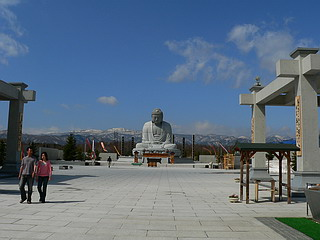 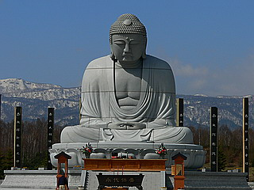
白い敷石を敷き詰めた敷地に鎮座する白御影石の大仏さん。
快晴だったので照り返しで目が痛くなってくるよ…
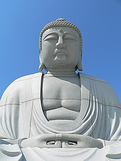 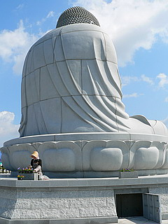
花の手入れをされていた方がおもむろに台座の扉をガバッと開けた。
「すわっ、胎内巡りか！」と思わず走り寄ってみたものの中は物置きだったみたいです。
大仏さんの手前には鐘と太鼓が。
これまた規格外の巨大なものだった。
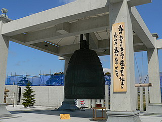
さて。
ここまでご覧になられた方の中には「霊園なのに墓がないじゃんかよお」と仰る御仁も多かろう。
そうなんです。
ここまでは霊園の中にある公園だったんです。
いわばここまでは墓地の前座。
前座にしてはあまりにも強烈すぎて、まるで林家いっ平の前に小朝が出てくるような状態。
しかし、面白い前座が終わったからといって席を立つのも勿体無い（いや、いっ平だったら全然立ってもいいんですけどね）ので先に進もうではないか。
モアイや大仏があるエリアから更に奥に進む。
もちろん広大な霊園だけに敷地内とはいえ移動は車でないとかなり厳しい。
と、見えてくるのはこんな光景。
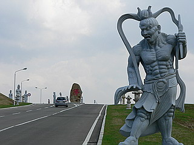
巨大な石像の合間を縫って車が走っていく。
まるで彼岸に向かってドライブしているかのような現実離れした光景だ。
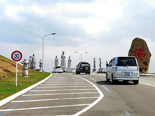 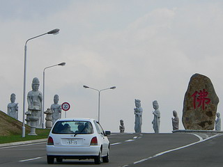
片道2車線の彼岸へのハイウェイ（といっても制限速度は30キロなのだよ）、途中にはビョーキで辞めちゃったアノ総理の父の名が刻まれた碑も。
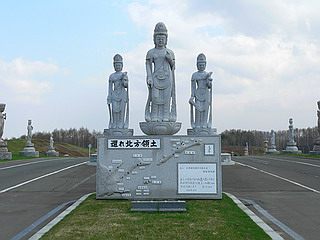
で、彼岸ハイウェイを越えるとやっと墓地が見えてくる。
その入り口に建つ滝之太陽殿。要は法事とか食事を行うホールである。
でも建物にはこんな素敵なビーズ細工の仮面が。あくまでもグローバル路線で責めたてるのである。
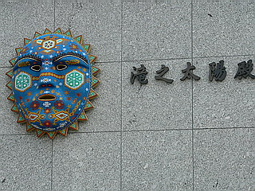
広い、広い墓地を車で走る。
墓地自体はいたって普通の墓地なのだが、いかんせん広すぎるので気が遠くなってくる。
自分の求めた墓所がどこなのかわからなくなっちゃう人も相当いるのではなかろうか。
そんな一画に八角堂が建っている。
積雪時に墓地に行けない人はここでお参りするのだとか。
中を覗いてみると何故かモアイさんの絵画が飾られてました。
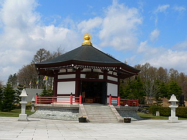 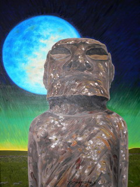
で、その近くにある日本庭園には何故かミニチュアの金閣寺が。
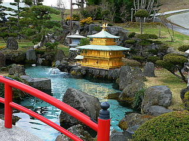 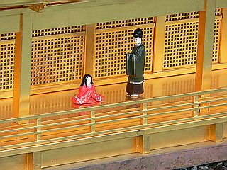
金閣には雅やかな宮中の貴族が。
「ここの冬は寒いどすなあ〜」
「ほんに。恵山といい、ここといい、何で北のお方たちは金閣が好きなんやろか〜」
きっと中では一休さんが虎退治をしているに違いない。
で、ふるさと霊廟という納骨堂。
石で構成されたモダンなデザイン。
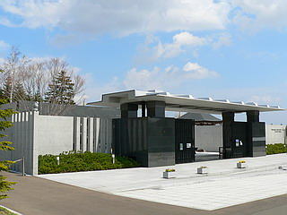
中にはこれまた鎌倉大仏そっくりの黒い石仏が。
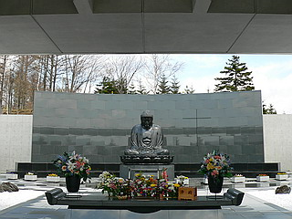 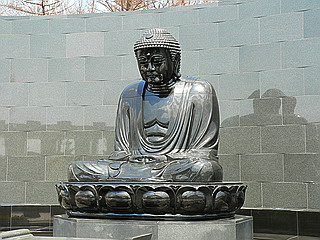
ココに写っている墓地は全体の何十分の一、ってゆーか墓地は広すぎて全部見てません。
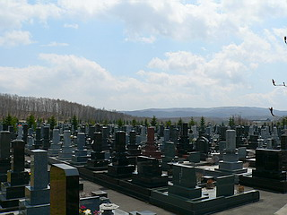
モアイ地蔵やストーンヘンジが大好きな方、あるいは「俺はビッグだ！」と自覚する方は購入を検討するがよろしいでしょう。
かく言う私も思わず墓地販売の金額とか見入っちゃいました…
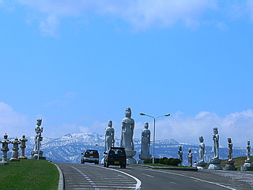
帰り道、彼岸ハイウェイを逆走。
デカイ観音サマを抜け、モアイに差し掛かった頃…
さっきジョギングしてた人じゃん！！！！まだ、こんだけしか移動してないの？！
…やっぱ冬場は遭難するかも…
2007.5.
※この後、この霊園は大幅にリニューアルしました。
再訪記はこちら↓